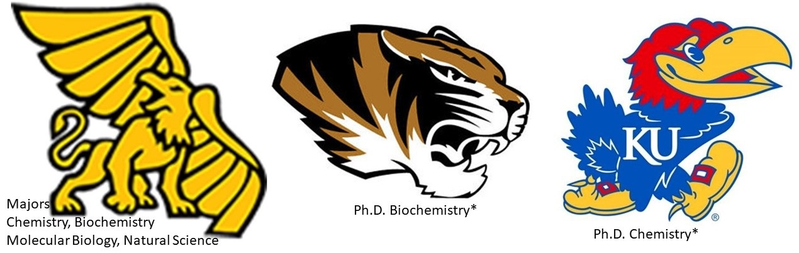

Universities

Tutoring & Teaching Experience
As an honors geek, I have tutored and taught a broad spectrum of graduate-, college-, high school-, middle school-, homeschool students
and adult learners (face-to-face, online and in classrooms & labs), including βββ (Tri Beta Biology Honor Society) students and members
of ACS (American Chemical Society) in both the private- and university settings since 2000.
I really enjoy helping students reach their full potential and am excited about every chance to improve someone’s life by passing on my scientific
insight (how stuff works) and explain the very precise language of math. This, mixed with a healthy dose of patience, drawing from a wide array of problem
solving skills and the understanding that students learn in different ways, generally changes students’ attitudes towards the previously problematic subject,
reduces stress and frustration, makes it fun, builds self-esteem and more often than not, warrants further exploration on their part.
I feel, this is best accomplished by using ‘down-to-earth’ attitude and language, asking leading questions and providing fertile grounds for assimilation.
When a student experiences difficulties in biology, chemistry or physics, it is often due to a lack of assimilation, disconnection between abstract
concepts and real-life application. Comparing already learned and understood information to new concepts will allow the material to make sense,
which, in turn, will built a solid foundation for increasing intellectual property.
Math problems are much like puzzles, best handled by breaking them down into individual steps (making them look like old problems/concepts) and allowing
students to make the connection between new and old material presented. The common threat is logic and the realization that more than one concept can be applied to
solve an equation. If you like puzzling, there is no reason you should not like math and who does not like to puzzle.
Other: besides winning at the Missouri Academy of Science, working in R&D (research and development) for a pharmaceutical company, teaching general and
organic chemistry lab to undergraduates, teaching algebra at a local middle school, teaching GED classes at a local non-profit organization, working the regional
Chemathon, working with boy scouts to receive their science batch, designing lectures & labs and producing the occasional online tutorial,
I have conducted independent research, please see below.
Scientific Research
Creation of Plasmid via isolation and insertion of
Desulfovibrio desulfuricans upstream dsrA into pLKC480
- upon growing the anaerobic Desulvibrio desulfuricans, the desired DNA sequence was isolated and appropriate primers were designed.
Once the restriction sites, reading frames and prior gene fusions of the plasmid in question were identified, the above mentioned bacterial sequence
was inserted in an effort to harvest D. desulfuricans ability to break down industrial waste,
while eliminating the need for a strictly anaerobic environment.
- Interpretation of nuclear magnetic resonance spectra for identification of protein structure
- analysis and identification of protein structures via Nuclear Magnetic Resonance
- Characterization of genetic structure of threatened Eastern
Massasauga Rattlesnake population via microsatellite DNA markers
- working with the Missouri Department of Conservation at Squaw Creek National Wildlife Refuge, Mound City, MO.
Upon visiting Squaw Creek,
learning about non-invasive snake capture and immediately applying these new skills to procure Eastern Massassauga Rattlesnakes, the drawn blood samples
were subjected to DNA work up (via microsatellite DNA markers) to determine genetic relatedness in an effort to repopulate
the area with the threatened Massasauga Rattlesnake species.
- Determination of Best Practice to Identify Trace Metals in Lead Alloy
- working with Johnson Control, St. Joseph, MO to speed up plants ability to identify problems caused by raw material
. Determining best practices to
quickly and accurately identify trace metals in lead alloy
used to produce car batteries and thereby avoiding lengthy and expensive downtime of production lines.
This endeavor included the refurbishing of an older Inductively Coupled Plasma spectrometer to allow for faster identification then by initially used
Atomic Absorption and/or Atomic Emission spectroscopy.
- Expression and purification of (PAM) secretory pathway proteins from
E. coli & utilizing these to generate polyclonal antibodies
- to investigate novel neurotransmitter hormone Pedityl-glycine Alpha-amidating Monooxygenase, a transmembrane protein
modifying neuropeptide hormones
before release from the pituitary gland, E. coli was inoculated and cultures were grown.
Metabolism was boosted to increase synthesis of desired protein,
which was then isolated and purified. Isolation of serum from blood samples allowed for monoclonal antibody confirmation via Western Blot.
Professional Societies
Community Service
*volunteer work teaching GED classes and preparing students and adult learners at ‘Avenue of Light’, Kansas City, KS
* volunteer work tutoring middle school math at local library, Kansas City, MO
* volunteer work tutoring BBB/Tribeta Honors Society (Biology) peers & students
* Alchemist Cub, Official MWSU Chemistry Club
* MWSU Chemistry Mentor Program
* volunteer work proctoring and assisting Professors at annual Chemathons (regional chemistry and physics competition)
* volunteer work teaching boy scout science workshop (chemistry lecture & lab)
* volunteer work for Combined Federal Campaign
Honors / Awards
*won Missouri Academy of Science
* Recognition of Scholastic Excellence, Arts & Science, MWSU
* Combined Federal Campaign Silver Award
* US Army Spouse/Family & Community Support - Operation Desert Shield/Storm
* Best Neighbor Award for rescuing, rehabilitating and finding homes for stray dogs